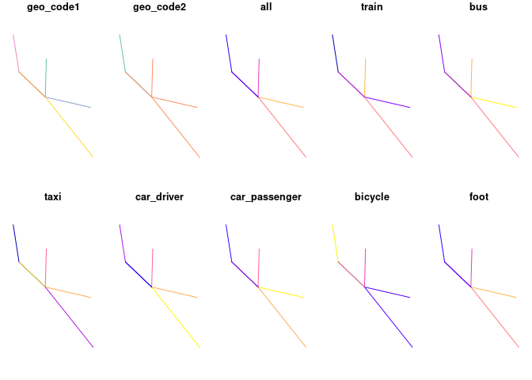
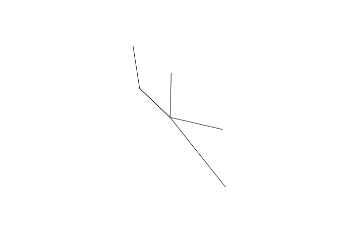

The goal of od is to provide functions and example datasets for working with origin-destination (OD) datasets. OD datasets represent “the volume of travel between zones or locations” (Carey et al. 1981) and are central to modelling city to global scale transport systems (Simini et al. 2012).
Installation
You can install the released version of od from CRAN with:
install.packages("od")Install the development version from GitHub with:
# install.packages("devtools")
devtools::install_github("itsleeds/od", build_vignettes = TRUE)The examples below provide a gentle introduction to the package. For a more detailed introduction to the package and OD data in general, see the od vignette online at itsleeds.github.io/od or by executing the following command after installing the package:
vignette("od")You can find descriptions of each of the package’s functions with reproducible examples on the package’s web page: https://itsleeds.github.io/od/reference/index.html
Motivation
The package originated as a set of functions in the package stplanr for working with origin-destination data. The od2line() function, for example, takes a data frame and a spatial object as inputs and outputs geographic lines representing movement between origins and destinations:
library(od) # load example datasets
od_data_df # OD data as data frame
#> geo_code1 geo_code2 all train bus taxi car_driver car_passenger bicycle foot
#> 1 E02002384 E02006875 966 14 153 14 69 18 13 679
#> 2 E02002404 E02006875 1145 6 174 17 96 38 10 798
#> 3 E02006875 E02006875 1791 21 38 5 69 7 8 1637
#> 4 E02006876 E02006875 1035 11 132 6 97 24 10 749
#> 5 E02006861 E02002392 453 1 51 0 51 6 26 317
#> 6 E02006875 E02002392 286 2 15 5 16 2 10 235
#> 7 E02002392 E02006875 753 10 91 21 33 7 19 571
od_data_centroids[1:2, ]
#> geo_code geometry
#> 1 E02002407 -1.609934, 53.790790
#> 2 E02002336 -1.62463, 53.88605
desire_lines_stplanr = stplanr::od2line(od_data_df, od_data_centroids)
desire_lines_stplanr[1:2, 1:9]
#> Simple feature collection with 2 features and 9 fields
#> Geometry type: LINESTRING
#> Dimension: XY
#> Bounding box: xmin: -1.545708 ymin: 53.7923 xmax: -1.518911 ymax: 53.80925
#> Geodetic CRS: WGS 84
#> geo_code1 geo_code2 all train bus taxi car_driver car_passenger bicycle
#> 1 E02002384 E02006875 966 14 153 14 69 18 13
#> 2 E02002404 E02006875 1145 6 174 17 96 38 10
#> geometry
#> 1 LINESTRING (-1.545094 53.80...
#> 2 LINESTRING (-1.518911 53.79...It works great, and is plenty fast enough for most applications, but there are some issues with stplanr::od2line() (which also affect the other od_*() functions in stplanr):
- The function is a commonly needed and low-level function, buried in a large package, reducing ‘findability’
- To get the function you must install
stplanrplus its numerous dependencies - The function has not been optimised
- It has no class definition of ‘od’ data
The od package addresses the first three of these issues (it may at some point define a class for od objects but there are no immediate plans to do so).
The equivalent code in the od package is as follows:
desire_lines_od = od_to_sf(od_data_df, od_data_centroids)
#> 0 origins with no match in zone ids
#> 0 destinations with no match in zone ids
#> points not in od data removed.The result is an sfc object that has the same geometry as the output from od2line:
desire_lines_od$geometry[1:2]
#> Geometry set for 2 features
#> Geometry type: LINESTRING
#> Dimension: XY
#> Bounding box: xmin: -1.545708 ymin: 53.7923 xmax: -1.518911 ymax: 53.80925
#> Geodetic CRS: WGS 84
#> LINESTRING (-1.545094 53.80925, -1.545708 53.79...
#> LINESTRING (-1.518911 53.7923, -1.545708 53.79593)
desire_lines_stplanr$geometry[1:2]
#> Geometry set for 2 features
#> Geometry type: LINESTRING
#> Dimension: XY
#> Bounding box: xmin: -1.545708 ymin: 53.7923 xmax: -1.518911 ymax: 53.80925
#> Geodetic CRS: WGS 84
#> LINESTRING (-1.545094 53.80925, -1.545708 53.79...
#> LINESTRING (-1.518911 53.7923, -1.545708 53.79593)These are ‘desire lines’ representing the shortest (straight line) path between two centroids and can plotted using geographic data and mapping packages such as sf, mapview, tmap and mapdeck, e.g.:

By default the package uses the sfheaders package to create sf objects for speed. You can can also specify sf outputs as follows:
desire_lines_od_sf1 = od_to_sf(od_data_df, od_data_centroids)
#> 0 origins with no match in zone ids
#> 0 destinations with no match in zone ids
#> points not in od data removed.Performance
Benchmark on a small dataset:
nrow(od_data_df)
#> [1] 7
bench::mark(check = FALSE, max_iterations = 100,
stplanr = stplanr::od2line(od_data_df, od_data_zones),
od = od_to_sfc(od_data_df, od_data_zones),
od_sf1 = od_to_sf(od_data_df, od_data_zones),
od_sf2 = od_to_sf(od_data_df, od_data_zones, package = "sf", crs = 4326)
)
#> # A tibble: 4 x 6
#> expression min median `itr/sec` mem_alloc `gc/sec`
#> <bch:expr> <bch:tm> <bch:tm> <dbl> <bch:byt> <dbl>
#> 1 stplanr 5.12ms 5.84ms 171. 607.1KB 4.16
#> 2 od 2.49ms 2.73ms 358. 78.1KB 3.62
#> 3 od_sf1 3.62ms 4.07ms 241. 77.8KB 4.92
#> 4 od_sf2 3.53ms 4.02ms 246. 90.5KB 5.01Related open source projects
- stplanr is an R package package designed to support transport planning, with a focus on geographic transport datasets and many functions for working with OD data in the od function family.
-
cartography is an R package with functions for working with OD data, including
getLinkLayer() - gravity is an R package for developing ‘gravity models’ to estimate flow between zones
- flowmap.gl, a JavaScript package for visualising OD data
- Arabesque is another JavaScript project for working with OD data
Code of Conduct
Please note that the od project is released with a Contributor Code of Conduct. By contributing to this project, you agree to abide by its terms.